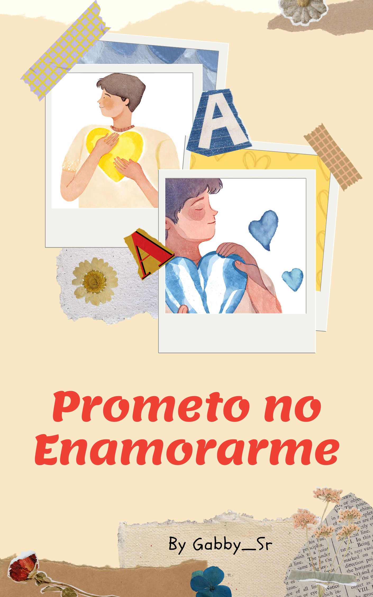
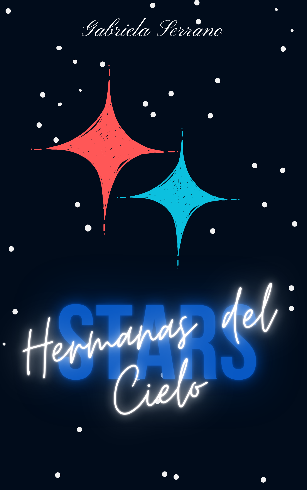
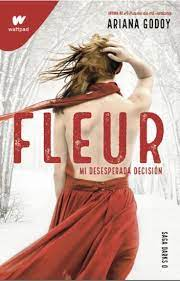

Imily es una joven chica que vive siempre en su mundo de fantasía tratando de olvidar lo cruel
que puede ser la sociedad, escribiendo notas del como se siente con respecto a su vida, un día
Imily dejo olvidada una de sus notas, llegan a si a manos de un desconocido que le respondió y
le dio ánimos, ¿logra Imily descubrir quien fue?
¿Aún recuerdas el misterioso que respondió la nota de Imily? Pues, bienvenido al mundo de Ossian, un
chico que aprendió a liberar sus sentimientos gracias a una chica que olvido una pequeña nota, creando así
las suya, creando Nuevas notas.
Ossian llego a Inglaterra para termina sus estudios, llevándose consigo el pesar de no haber hablado con
Imily en persona, pero hay algo que él no sabe, un año después, Imily obtuvo la oportunidad de estudiar
en Inglaterra también, ¿Cómo será que lo descubrirán?
Mi madre una vez me dijo que las simples casualidades pueden llevarte a un gran desenlace, no tenia idea lo que
ella decía, hasta el momento que viví un sinfín de cosas al lado de muchas personas, creí que mi madre había muerto
por amor, prometí jamás enamorarme para no terminar como ella, pero creo que rompí mi propia promesa…creo que si me enamore.

El mundo tiene muchas cosas que contar, al igual que la mente de un escritor, pasando muchas cosas por
su cabeza, pensando en como hacerlas llegar, pequeñas historias sin sentido o pequeñas historias para
los lectores que viven en un mundo sin sentido.
“No trato de hacer simple poesía, solo trato de que otros comprendan mi sentir con sincera poesía”
Dos hermanas nacidas en el cielo para poder salvar la humanidad, un destino incierto e impuesto en los
hombros de dos chicas jóvenes con ninguna pizca de conocimiento del planeta tierra, ambas tendrán que
aprender a vivir con los humanos y huir de las manos de los soldados, las hermanas del cielo tendrán que
aprender a sobrevivir al grupo apocalíptico de los cometas.

Una noche fue suficiente para cambiarlo todo, para destruirlo todo. Él acabó con mi familia, con todo lo que
amo y por alguna razón me dejó con vida, ¿Por qué? Es tan doloroso vivir después de esa noche, tal vez él quería
que viviera y sufriera, ese me parece un destino aun más cruel que la muerte.

Él llegó a mí con una propuesta inusual.
Ser su doncella.
Jamás imaginé que esa propuesta sellaría mi destino. Él se convirtió en mi deseo, mi tentación y mi pecado, mientras
que yo, me he convertido en la doncella del vampiro.
Victoria Massey es trasladada al internado Fennoith tras intentar envenenar a su padrastro con matarratas. Después de
la muerte de Adelaide Massey, la relación de ambos empeoró. Adelaide dejó en herencia toda su fortuna a su hija única
, la joven Victoria. Benjamín, viudo y padrastro de la muchacha, crédulo pensó que la fortuna de Adelaide sería para él.
A él lo ocultaron desde su nacimiento.
Nadie lo ha visto nunca.
En sus 20 años, jamás ha salido del palacio.
Se dice que es una vergüenza.
Pero en seis meses será el rey.
Así que ella ha llegado para entrenarlo.
Para cambiarlo.
Solo que él tiene algunos secretos.
Y también unos cuantos juegos que pueden complicarlo.
Las huellas de un pasado doloroso persiguen al rey Magnus Lacrontte, quien ha levantado murallas para
no volver a ser lastimado o traicionado, pero aún así el destino siempre encuentra una manera de burlarse
de él, dejándolo en la posición menos ventajosa según su percepción. Estar enamorado